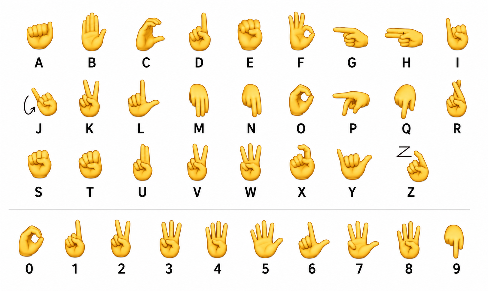

Point your camera, sign the alphabet or numbers, and watch the model read it back in real time. No installs, no sign language experience required to test it out.
Spell out full words letter by letter, with SPACE and DEL signs supported.
Switch models instantly to capture digit signs 0 through 9.
Every prediction shows a live confidence score so you know what's reliable.
Not sure how to sign a letter or number? Use this chart as your guide.
